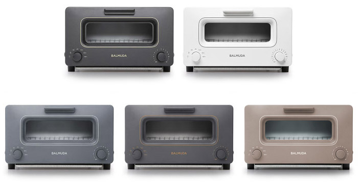
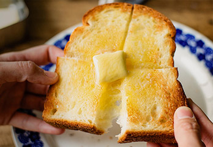
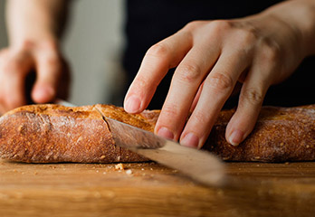
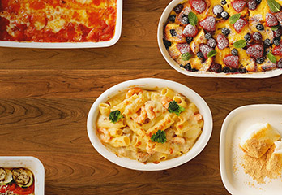
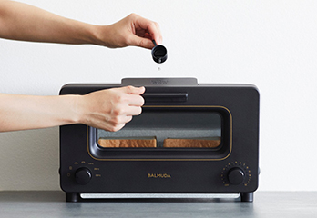

- 맛, 향, 그리고 식감
- '맛있다' 라는 느낌은 맛과 향, 그리고 식감으로 만들어집니다.
BALMUDA The Toaster는 스팀 테크놀로지와 온도제어 기술의 만남으로 어떠한 빵도 최고의 맛을 이끌어냅니다.
- 감동의 토스터
- 스팀 토스터 1300W
BALMUDA The Toaster는 풍부한 향과 식감을 실현하는 감동의 토스터.
발뮤다만의 스팀 테크놀로지와 온도 제어의 만남으로 놀라운 맛을 실현했습니다.
새로워진 클래식 모드는, 다양한 요리를 좀 더 쉽고 맛있게 즐기실 수 있습니다.
-

최고의 토스트
BALMUDA The Toaster로 구우면 표면은 바삭하고 속은 수분과 향이 살아있는 최고의 토스트가 만들어집니다. 풍부하게 느껴지는 밀의 향기가 인상적입니다. 버터를 바르거나 제철과일로 만든 잼과 꿀을 듬뿍 얹어 최고의 토스트를 드셔보세요.
-
갓 구운 듯한 크루아상
부드럽게 녹아내려 살짝 그을린 치즈를 싫어하는 사람은 아마 없을 것입니다. BALMUDA The Toaster는 스팀의 힘으로 치즈의 수분과 풍미를 그대로 남긴 채 온도 제어 기술로 치즈 표면만 절묘하게 그을립니다. 심플한 치즈 토스트부터 피자 토스트까지 어떠한 토핑을 올려도 맛있는 토스트를 만들어 드립니다.
-

고급 레스토랑의 바게트
바게트를 기존 토스터로 구우면 수분이 날아가 표면과 속까지 딱딱해져 먹기 힘들었던 기억이 있을 것입니다. BALMUDA The Toaster는 세밀한 온도조절과 5cc물을 이용한 수분을 통해 표면의 바삭한 식감과 속의 부드러움을 동시에 실현합니다. 그 향긋한 풍미와 식감은 고급 레스토랑에서 갓 나온 바게트 맛을 재현합니다.
-
냉동 보관된 빵도 맛있게
BALMUDA The Toaster의 스팀 테크놀로지와 온도 제어 기술로 냉동 보관된 빵도 간편하고 맛있게 데워먹을 수 있습니다. 평소에 사용하던 작동 모드에서 1분만 더 추가해 보세요. 냉동되었던 빵도 방금 만든 빵처럼 맛있게 되살아납니다.
-

다른 요리들도 맛있게
스팀과 온도제어 기술을 사용하지 않은 클래식모드. 170℃ / 200℃ / 250℃ 의 온도 중 선택하여 미니오븐 처럼 사용할 수 있습니다. 작은 쿠키나 그라탕 등 간단한 오븐 요리를 만들 수 있고, 떡이나 냉동식품을 데워먹어도 일반 전자렌지보다 훨씬 맛있게 구워집니다.
-

리베이크
'리베이크'란 베이커리에서 사온 빵을 다시
따듯하게 데우는 것을 말합니다. BALMUDA The
Toaster는 스팀테크놀로지와 완벽한 온도제어로
겉을 태우지 않으면서 빵의 안까지 따듯하게
데울 수 있습니다. 버터의 향은 더욱 진하게,
밀의 풍미는 더욱 풍부하게. 빵의 결이 갓 구운
빵처럼 바삭한 식감으로 되살아납니다.